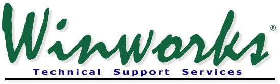

To Activate your remote session, select the option below as directed by
your Winworks Technical Support representative.
Log Me In Rescue
Go To Assist
Did you want to go to the main Winworks Software Website instead? Click
the link below:
Winworks.com
© Copyright 2021 Winworks Software, Inc.